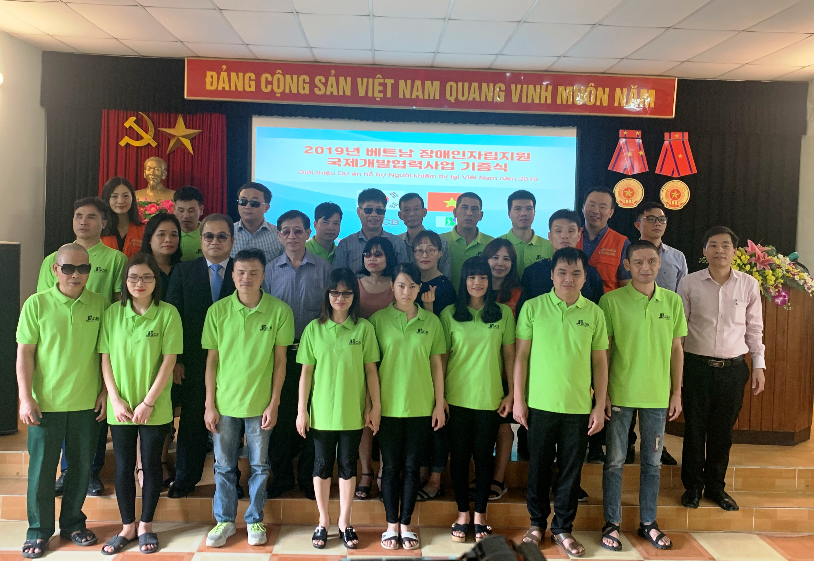

Dự án kết nối chúng tôi và cộng đồng
Một mình, ta làm được rất ít; cùng nhau, ta làm được rất nhiều.
Một mình, ta làm được rất ít; cùng nhau, ta làm được rất nhiều.

Về tổ chức Việt Nam và những người bạn
Lĩnh vực hoạt động: Hỗ trợ người khuyết tật và những người cần giúp đỡ, Rèn luyện một số kỹ năng cho người khuyết tật và người cần giúp đỡ,...; Mục tiêu: Đào tạo các kỹ năng cần thiết cho người khuyết tật và người cần cứu trợ, giúp họ có cơ hội tốt hơn để tìm việc trong tương lai (như dạy tiếng Anh, tiếng Anh trong dịch vụ chăm sóc khách hàng…), Hỗ trợ người khuyết tật và những người cần sự giúp đỡ tìm công việc thích hợp (xây dựng các mối quan hệ với những tổ chức chịu trách nhiệm về cộng đồng (CSR), các tổ chức phi chính phủ…, Tăng ý thức cộng đồng về bảo vệ môi trường...Dự án hỗ trợ người khiếm thị tại Hà Nội
Vị trí: Trường Nguyễn Đình Chiểu cho học sinh khiếm thị (Địa chỉ: 21 Lạc Trung, Hai Bà Trưng, Hà Nội, Việt Nam); Trung tâm phục hồi chức năng và đào tạo cho người khuyết tật (Địa chỉ: 387 Trung Kính, quận Cầu Giấy, Hà Nội, Việt Nam) Mục tiêu: Mục tiêu của dự án này nhằm nâng cao khả năng tiếng Anh cho những thành viên tham gia, giúp họ có thể giao tiếp được với những người khác bằng tiếng Anh một cách trôi chảy, và chúng tôi hy vọng rằng nhờ vào khả năng tiếng Anh của mình, họ có thể kiếm được công việc dễ dàng hơn trong tương lai; Ngày nay, tiếng Anh là ngôn ngữ phổ biến trên toàn cầu và đem đến nhiều triển vọng việc làm cho mọi người, kể cả người khiếm thị, vì vậy, họ cần phải có khả năng giao tiếp tiếng Anh trôi chảy. Lực lượng: Tình nguyện viên quốc tế, Tình nguyện viên Việt Nam, (nói tiếng Việt và tiếng Anh, hỗ trợ việc giảng dạy và giúp tình nguyện viên quốc tế giao tiếp với học sinh và những người Việt Nam khác, hầu hết tình nguyện viên đều có ít nhiều kinh nghiệm và là những trợ giảng đắc lực), Các học sinh khiếm thị
